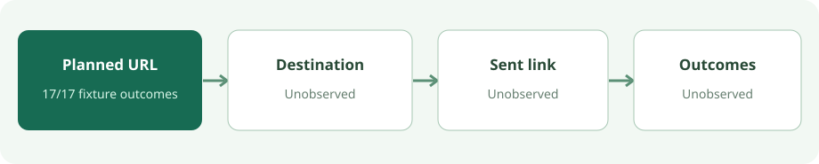

Campaign link QA · 23 Oct 2026 · executed fictional offline fixture
Check the planned campaign link before sending
For one approved direct HTTPS destination, a local URL-string check caught the deliberate copy and contract errors in this fictional fixture: 17 of 17 expected outcomes matched. Three approved variants passed; 14 mistakes were flagged. This says nothing about a live link, sent message, analytics event or signup. You do not need a shortener or analytics installation merely to compare a planned URL with an approval record.
The approval contract
The fictional approved URL is https://example.invalid/guide?utm_source=newsletter&utm_medium=email&utm_campaign=autumn-guide. The checker requires the parsed HTTPS origin https://example.invalid, parsed path /guide, and exactly one each of utm_source=newsletter, utm_medium=email and utm_campaign=autumn-guide. It allows no other query key, fragment or embedded URL username/password. .invalid is fictional; the script made no network request.

Expected versus observed
Every row is fictional. Unless noted, the destination and all three approved UTM pairs are present. [] means no diagnostic. The table abbreviates inputs; the full fixture cases retain every exact URL and expected list.
| Case | Input difference | Expected | Observed |
|---|---|---|---|
approved | Exact approved spelling | [] | [] |
percent_encoded_pass | %75tm_source=%6Eewsletter; campaign autumn%2Dguide | [] | [] |
normalized_origin_pass | Host EXAMPLE.invalid:443 | [] | [] |
mixed_case_name | UTM_medium instead of utm_medium | missing:utm_medium; unapproved_parameter:UTM_medium | Same |
missing_campaign | No utm_campaign | missing:utm_campaign | Same |
empty_source | utm_source= | empty:utm_source; wrong_value:utm_source | Same |
duplicate_same | Two identical utm_source pairs | duplicate:utm_source | Same |
duplicate_conflict | utm_source=newsletter and utm_source=print | duplicate:utm_source; conflicting:utm_source; wrong_value:utm_source | Same |
wrong_origin | Host elsewhere.invalid | origin_mismatch | Same |
wrong_path | Path /other | path_mismatch | Same |
not_https | Scheme http: | not_https; origin_mismatch | Same |
embedded_credentials | Fictional reader:secret@ userinfo | embedded_credentials | Same |
fragment | #section | fragment_not_approved | Same |
empty_fragment | Bare trailing # | fragment_not_approved | Same |
email_like_extra | Extra email=ada%40example.invalid | unapproved_parameter:email; email_like_value:email | Same |
encoded_path_not_equal | Path /%67uide | path_mismatch | Same |
relative_url | No scheme or host | invalid_absolute_url | Same |
No unexpected oracle mismatches occurred. The encoded query key/value passed after form-style decoding. The uppercase query name did not become lowercase. An uppercase host with default :443 passed the parsed-origin check; the encoded path did not pass the parsed-path check. This is a parsed-component contract, not a raw-byte identity test. The fixture has no independent oracle for business approval: a wrong contract or an untested malformed URL class could still pass.
Reproduce the local check
Download the self-contained Node script and the fictional cases into one directory. With Node v24.20.0, the command used for this fixture is:
node campaign-link-offline-fixture.mjs campaign-link-fixture-cases.jsonCompare with the recorded stdout. The checker reads local JSON with built-in node:fs, compares observed lists with node:assert/strict, and uses the global URL/URLSearchParams APIs. It exits nonzero if an oracle differs; this execution exited 0. There is no fetch, socket, package install or credential use in the script. Cross-runtime equivalence was not tested.
It compares parsed URL.origin and URL.pathname and decoded URLSearchParams.getAll(name) values. Query order is immaterial. Names and values are case-sensitive; the checker does not trim, lowercase or Unicode-normalize them. Duplicate required keys fail even when their values agree. The email-like diagnostic uses only a whole-value local@dotted-domain-like pattern; it is not a privacy scanner. Node URL API documentation and the WHATWG URL Standard explain the parser model; the observed results above come from the executed fixture, not documentation inference.
What this check cannot establish
| Stage | Evidence here | Still unobserved |
|---|---|---|
| Planned string | 17 fictional URLs compared locally with one fictional approval contract. | No authorized production URL. The email-like pattern can miss encoded or obfuscated identifiers, tokens, path data and other sensitive values. |
| Live destination | None. | DNS, TLS, HTTP status, redirects, landing content and UTM survival. |
| Sent message | None. | Exact sent/preview link bytes, sender rewriting, tracking, delivery and human clicks. |
| Analytics and signup | None. | Pageviews, consent or ad-block effects, attribution, on-site events, authoritative account creation and causal effect. |
If a permissioned test message and destination become available, compare the exact sent link with the approved record, then inspect the destination response and redirects separately. Analytics and confirmed signup each need their own evidence. A passing pre-send string check cannot collapse those stages.